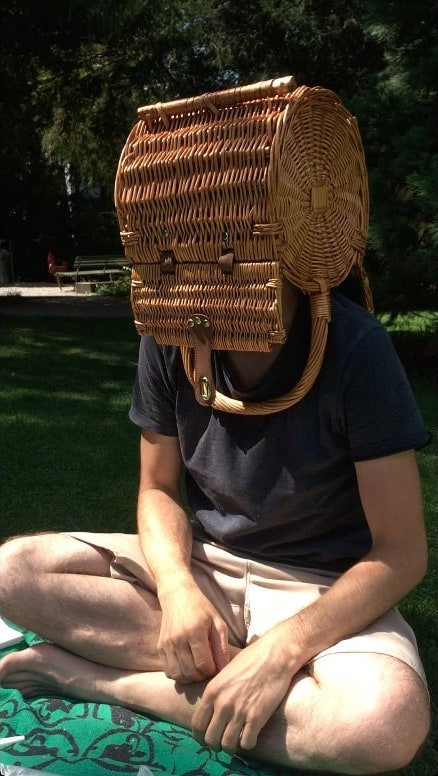

Filmmusik, Auftragskomposition, Arranging
Spielfilm Sekuritas:
https://www.filmcoopi.ch/movie/sekuritas
Dokfilm Muli:
https://www.maultier-film.ch,
https://www.youtube.com/watch?v=kl6HMKY0K3Q
Konerland:
https://www.konerland.ch
Jazz, Pop, World
Konerland:
https://www.konerland.ch
Niqu:
https://www.youtube.com/watch?v=3cW0ov6SmN4
SEND/RECEIVE:
https://www.tobias-meier.ch/send-receive
Einfache musikalische Setups mit wenig Material für natürliche Aufnahmen.
Noch keine, aber topmotiviert.
Mail:
martin@martinmeyermusic.ch
Instagram:
@martinmeyermusic
Studio:
https://maps.app.goo.gl/mAwFe4ug7zqs3dPp8
